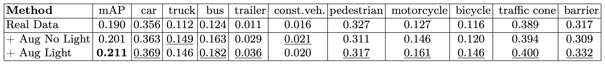
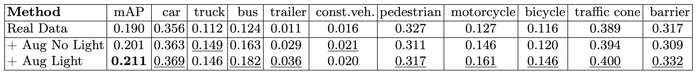

Toronto AI Lab
Toronto AI Lab
We consider the challenging problem of outdoor lighting estimation for the goal of photorealistic virtual object insertion into photographs. Existing works on outdoor lighting estimation typically simplify the scene lighting into an environment map which cannot capture the spatially-varying lighting effects in outdoor scenes. In this work, we propose a neural approach that estimates the 5D HDR light field from a single image, and a differentiable object insertion formulation that enables end-to-end training with image-based losses that encourage realism. Specifically, we design a hybrid lighting representation tailored to outdoor scenes, which contains an HDR sky dome that handles the extreme intensity of the sun, and a volumetric lighting representation that models the spatially-varying appearance of the surrounding scene. With the estimated lighting, our shadow-aware object insertion is fully differentiable, which enables adversarial training over the composited image to provide additional supervisory signal to the lighting prediction. We experimentally demonstrate that our hybrid lighting representation is more performant than existing outdoor lighting estimation methods. We further show the benefits of our AR object insertion in an autonomous driving application, where we obtain performance gains for a 3D object detector when trained on our augmented data.
Model overview. Tailored for outdoor street scenes, our monocular lighting estimation model (a) predicts a hybrid lighting representation containing an HDR sky dome (top) representing sky and sun at infinity, and a lighting volume (bottom) representing the surrounding scene. With the predicted lighting, our object insertion module (b) renders a 3D asset into a given image and is fully differentiable w.r.t. lighting parameters. In addition to direct supervision signals from datasets, we apply a discriminator on the final editing result, enabling end-to-end training with adversarial objective for photorealism.

Qualitative comparison of lighting estimation. We insert a purely specular sphere into the image to visualize the lighting prediction, and display the environment maps on the bottom. Our method can recover both correct shadows and the high-frequency spatially-varying effects.
Object Insertion in Driving Sequences. With the estimated lighting, we insert virtual objects simultaneously into six surrounding cameras, following the nuScenes camera rig. Our method produces realistic editing results, and is able to composite rarely captured but safety-critical scenarios.
 

Application for Downstream Perception Task. We apply our object insertion approach as a data augmentation for the task of 3D object detection on nuScenes dataset. Specifically, we collect a set of high-quality 3D assets, do object insertion with our method, and use the 3D bounding box of the virtually inserted objects as additional training data. Compared to a state-of-the-art monocular 3D detector on a 10% subset of real data, naively adding objects leads to a 1% improvement, and another 1% is a result of having better light estimation.
@inproceedings{wang2022neural,
title = {Neural Light Field Estimation for Street Scenes with Differentiable Virtual Object Insertion},
author = {Zian Wang and Wenzheng Chen and David Acuna and Jan Kautz and Sanja Fidler},
booktitle = {Proceedings of the European Conference on Computer Vision (ECCV)},
year = {2022}
}
Neural Light Field Estimation for Street Scenes with Differentiable Virtual Object Insertion
Zian Wang, Wenzheng Chen, David Acuna, Jan Kautz, Sanja Fidler
|
* The 3D assets are provided courtesy of TurboSquid and their artists Hum3D, be fast, rabser, FirelightCGStudio, amaranthus, 3DTree_LLC, 3dferomon and Pipon3D. |